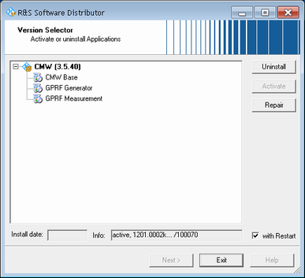

You can install several software branches in parallel. But only one of the installed software branches is active at a time and used by the instrument.
The "R&S Version Selector" allows you to change the active software branch, to uninstall optional software packages and to repair (reinstall) software packages.
Open the "R&S Version Selector" via the corresponding icon on the desktop.

To perform an uninstall, activate or repair action, follow these steps:
Select the relevant entry to the left. You can select a complete node (branch) or a single entry within a node.
If you want to perform an automatic restart when the action is complete, enable "with Restart".
Click the relevant action button to the right.
Follow any instructions of the "R&S Version Selector".